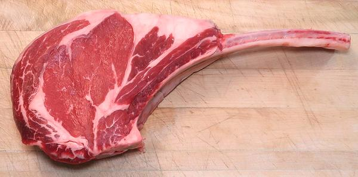

Tomahawk Steak

[Cowboy Steak]
This is a special version of a Rib Steak (#1103) including the full width of
a rib bone, Frenched, and a considerable length of it. The meat is thick,
1-3/4 inches minimum, and the whole cut weighs between 35 and 60
ounces. The photo specimen was 13-1/2 inches long, the meat was 2-1/2 inches
thick, and it weighed 2-1/2 pounds (40 ounces). It was purchased from a
large multi-ethnic market in Los Angeles (Altadena) for 2021 US $8.99 / pound.
More on Cuts of Beef.
Cooking:
This very thick cut takes special cooking. Here is
how to do it on a charcoal grill. Other methods need to imitate this method.
- You must have a really good probe thermometer to get this right - see our
Kitchen Thermometers page.
- Fire up the grill. Start a full chimney starter of charcoal. When
fully burning (charcoals coated with gray ash) pile the coals at one end
of the grill. Wait until it is good and hot.
- Just before placing on the grill, season the Tomahawk both sides with
Pepper and Salt.
- Place the Tomahawk on the grill as far away from the coals as possible.
Close down the lid.
- Turn the Tomahawk fairly often to make sure it's cooking evenly.
- After about 15 minutes, start checking the temperature at the center of
the meat. When it reaches 95°F to 100°F (35°C to 38°C)
take it off the grill, cover with foil and let it rest for about 15
minutes.
- Meanwhile start another chimney starter of charcoal and add it to the
charcoal already burning. You want it all really hot now.
- Take the foil off the Tomahawk and place over the hot coals until well
seared, about 1 minute, then turn it over and sear the other side, and
finally the fat edge.
ab_tomahz 210607 - www.clovegarden.com
©Andrew Grygus - agryg@clovegarden.com - Photos
on this page not otherwise credited © cg1
- Linking to and non-commercial use of this page permitted